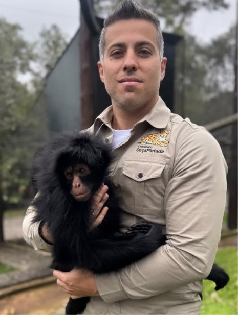
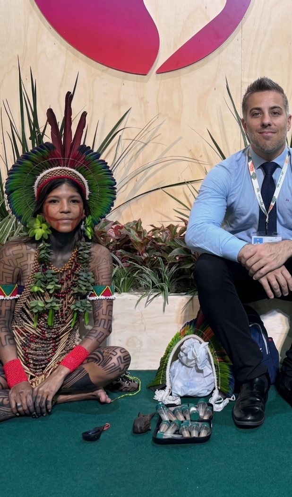
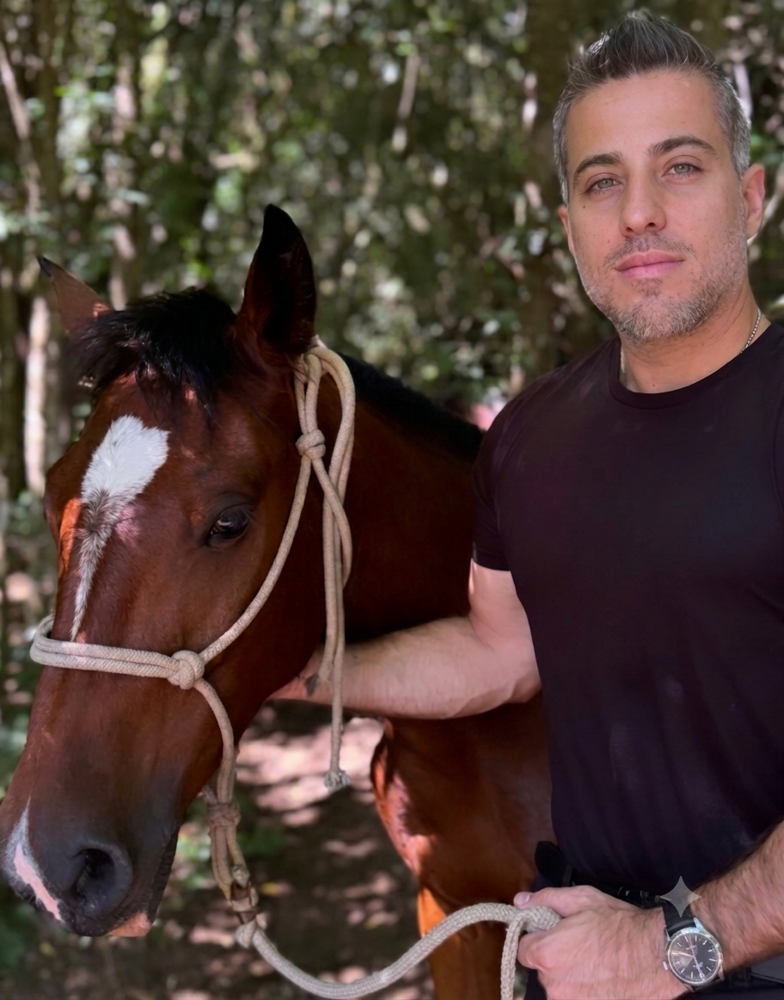
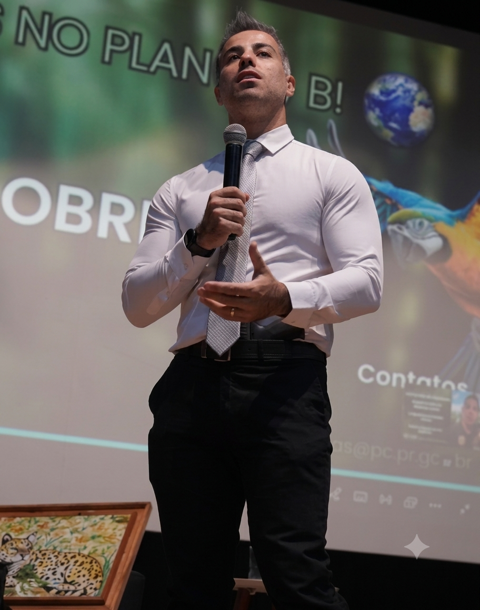
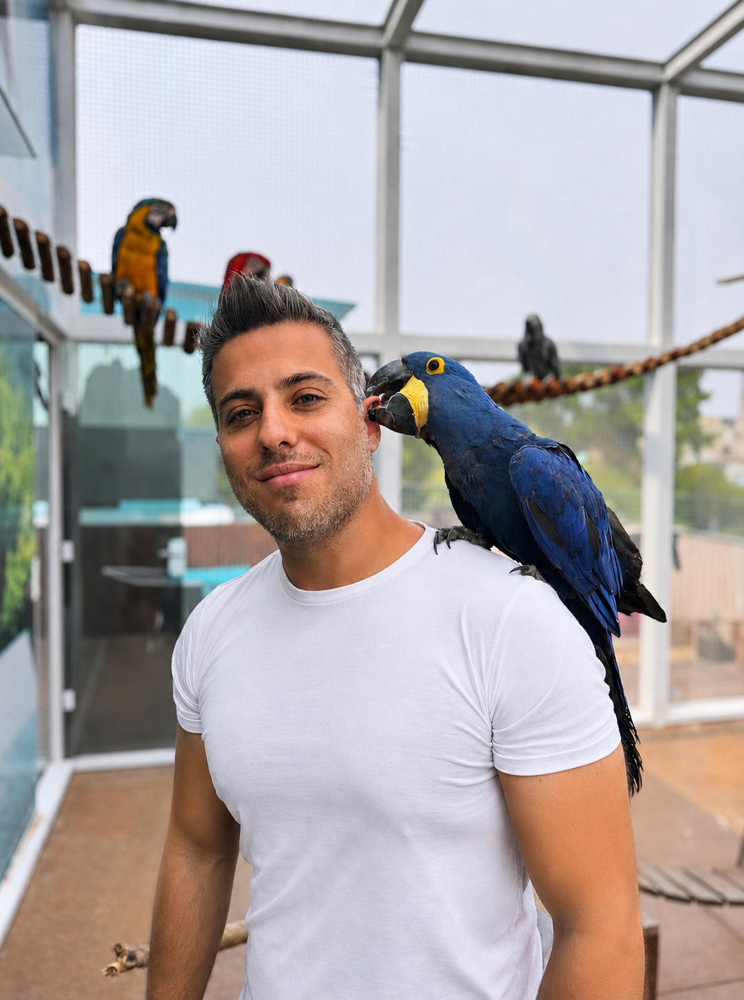

Eu gostaria de ser lembrado como alguém que teve resiliência e se manteve firme em seus propósitos, mesmo sendo menosprezado, por ser honesto e por lutar por aquilo em que acredito até o fim.
Virei policial pelo amor aos animais — não o contrário.
Uma trajetória que construí na linha de frente da proteção animal e ambiental, colocando a autoridade a serviço da causa, não de mim mesmo.